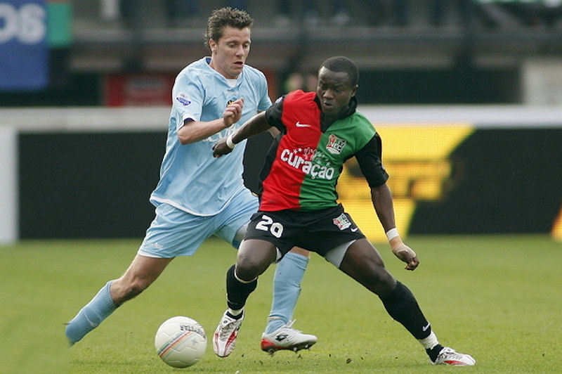
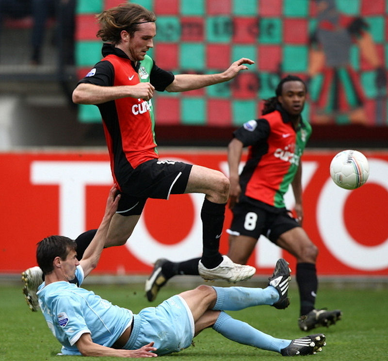

Linssen kreeg in de 33e min. geel.

Uitglijder van De Fauw.
Cissé leek Roda JC de winst te bezorgen. De international van Ivoorkust
maakte in de 69ste minuut een fraai doelpunt. Hij schudde met één
vloeiende beweging tegenstander Fernandez van zich af en scoorde met
een venijnig schot in de lange hoek, onbereikbaar voor doelman Babos.
Het was de achtste treffer van het seizoen voor Cissé, die als een held werd
gevierd.
Voormalig Roda-speler Bas Sibum zorgde tien minuten voor tijd voor de
gelijkmaker van NEC. In de slotfase behoedde doelman Castro Roda bij een
knal van Dennis Rommedahl nog voor een nederlaag. Het slotoffensief van de
thuisclub was vermakelijk, maar ook vergeefs.
NEC was het duel voortvarend begonnen, in het eerste kwartier werd Castro
enkele keren op de proef gesteld. Hij redde bij pogingen van Schöne en
Ntibazonkiza. Ook een gezamenlijke poging van genoemd tweetal leverde geen
treffer op. Castro stompte de bal na een vrije trap van Schöne voor de
voeten van Ntibazonkiza, maar de rebound werd geblokkeerd door Pa-Modou Kah.
Ook bij een kopbal van Tim Janssen, na een goede voorbereidende actie van
Rommedahl, was NEC dichtbij een voorsprong. Aan de andere kant stelden de
aanvallende kwaliteiten van Roda JC weinig voor. Een hard schot van
Oper werd door Babos gepareerd.
De thuisclub begon zonder smaakmaker Ntibazonkiza aan de tweede helft, hij
liep op slag van rust bij een overtreding van Vormer een
schouderblessure op en werd vervangen door Goossens. De dadendrang van
NEC beperkte zich nu tot een kopbal van Zomer die door De Jong van de
doellijn werd gehaald en een volley van Sibum die net naast ging. Met het
zakken van de zon verdween ook het laatste restje hoop van de Nijmeegse fans
dat hun ploeg nog zou scoren, totdat Sibum attent reageerde en de thuisclub
daarmee toch nog een punt bezorgde.
Doelpunten
0-1 S. Cissé 69'
B. Sibum 81' 1-1
Kaarten
E. Linssen 33'
R. Vormer 44'